日本語入力の方法
→ 練習問題へ
Macintosh（Mac OS X）の場合
- IMが日本語入力モードになっていることを確認する。入力モードは、メニューバーの右端寄りにミニアイコンで表示されている。［あ］と表示されていれば、日本語入力が可能な状態である。
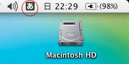
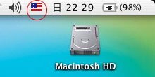
◎ 日本語モードの表示 と × 英語モードの表示
そうでなければ、次のどれかの操作を行なう。
- ［かな／カナ］キーを押す（日本語キーボードの場合）
- 入力モードを表示しているアイコンをマウスで選択して「ひらがな」を選ぶ
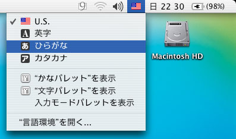
- 入力モードが［あ］になるまで、［Command／apple］キーを押したままで［Space］キーを押す
繁体字キーボードでの例
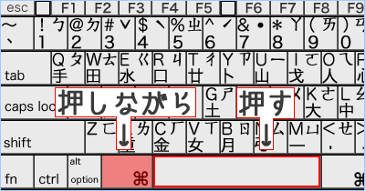
- キーボードのアルファベットを使って「ひらがな」を入力する。アルファベットとひらがなの対応は「ローマ字かな入力のキー操作」を参照せよ。
画面表示の例：ひらがなでの入力
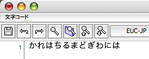
- 変換キー（通常は［Space］キー）を押して、ひらがなを漢字やカタカナに変換する。
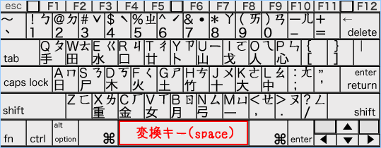
画面表示の例：漢字への変換
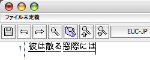
- １度で正しい文字にならなければ、繰り返し変換キー（通常は［Space］キー）を押す。ふつうは、変換キーを何度か続けて押すと変換候補がリスト表示されるようになっているので、［1-9］キーやマウスで選ぶこともできる。
画面表示の例：再変換
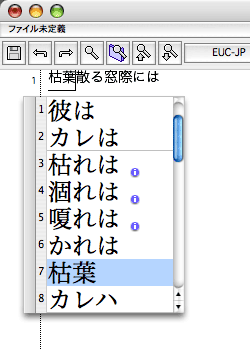
- 文字の区切りが正しくない場合は、［Shift］キーを押しながら［←］［→］キーを押して、正しい区切りにする。【→練習３の説明を参照】
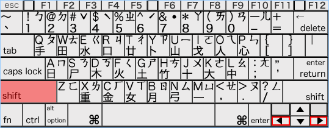
- ［→］キーを押して次の区切りに進む。
画面表示の例：次の区切りへ移動
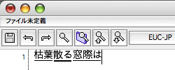
- すべての文字が正しく変換されたら［return］キーを押して確定する。
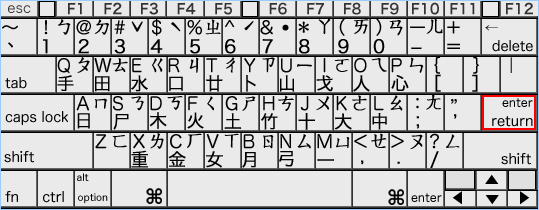
画面表示の例：入力文字列の確定

MicroSoft Windows（XP）の場合
- IMが日本語入力モードになっていることを確認する。入力モードは画面右下の入力パレットに表示されている。［JP］［あ］と表示されていれば、日本語入力が可能な状態である。
◎ 日本語入力モードの表示
× (繁体)中国語入力モードの表示 と 英数入力モードの表示
そうでなければ次のようにする。
- ［CH］と表示されている部分をマウスで選択して『［JP］日文』を選ぶ。
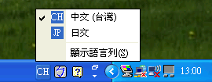
- ［A］［カ］などを表示されている部分をマウスで選択して「Hiragana」を選ぶ。
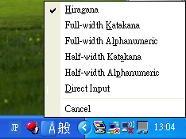
- キーボードのアルファベットを使って「ひらがな」を入力する。アルファベットとひらがなの対応は「ローマ字かな入力のキー操作」を参照せよ。
画面表示の例：ひらがなでの入力
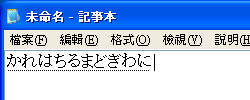
- 変換キー（通常は［Space］キー）を押して、ひらがなを漢字やカタカナに変換する。
画面表示の例：漢字への変換
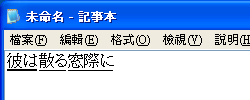
- １度で正しい文字にならなければ、繰り返し変換キー（通常は［Space］キー）を押す。ふつうは、変換キーを何度か続けて押すと変換候補がリスト表示されるようになっているので、［1-9］キーやマウスで選ぶこともできる。
画面表示の例：再変換
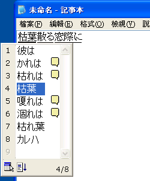
- 文字の区切りが正しくない場合は、［Shift］キーを押しながら［←］［→］キーを押して、正しい区切りにする【→練習３の説明を参照】。
- ［→］キーを押して次の区切りに進む。
画面表示の例：次の区切りへ移動
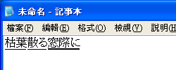
- すべての文字が正しく変換されたら［Enter］キーを押して確定する。
画面表示の例：入力文字列の確定
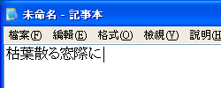
ローマ字かな入力のキー操作
日本語の入力には、いくつかの方法があるが、キーボードからのローマ字入力（ローマ字かな入力）が最も一般的である。以下に、一般的なキー操作の方法をまとめておく。
繁体字キーボードのキー配列（例）
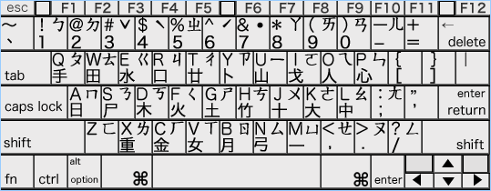
→ 練習問題へ